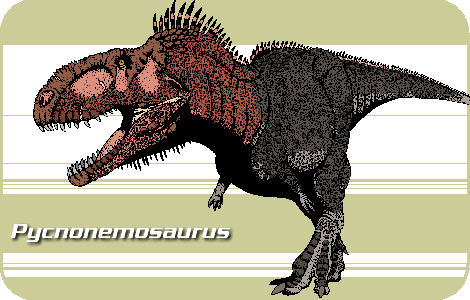

Meu blog de paleontologia brasileira
Pycnonemosaurus

O Pycnonemosaurus nevesi (popularmente chamado de Pycnonemossauro) é considerado o maior dinossauro carnívoro formalmente descrito do Brasil e o maior representante conhecido de toda a sua família no mundo.
Características Principais
- Tamanho gigante: Estima-se que ele media cerca de 9 metros de comprimento e entre 3 a 3,5 metros de altura.
- Peso pesado: Pesquisas indicam que o predador pesava perto de duas toneladas.
- Significado do nome: Seu nome significa "lagarto da floresta espessa", em homenagem ao bioma onde caçava.
- Época: Viveu há cerca de 70 milhões de anos, no final do período Cretáceo.
Família e Parentesco
- Abelisaurídeos: Ele pertencia à família Abelisauridae, um grupo de carnívoros bípedes muito comuns no hemisfério sul.
- Braços curtos: Assim como o seu parente famoso mais próximo, o Carnotauro, o Pycnonemossauro possuía braços extremamente curtos e atrofiados.
- Primo do T-Rex?: Embora a mídia às vezes o chame de "primo do T-Rex" por ser um grande predador, eles pertencem a famílias evolutivas bem diferentes.
Descoberta e Fósseis
- Local achado: Seus restos foram descobertos no estado de Mato Grosso, em rochas na região de Chapada dos Guimarães.
- Fósseis escassos: A ciência conhece o animal por meio de fragmentos, incluindo dentes, vértebras da cauda e partes da bacia.
- Mistério do crânio: Como nenhum pedaço do crânio foi achado ainda, os cientistas não sabem dizer com certeza se ele tinha chifres como o Carnotauro.